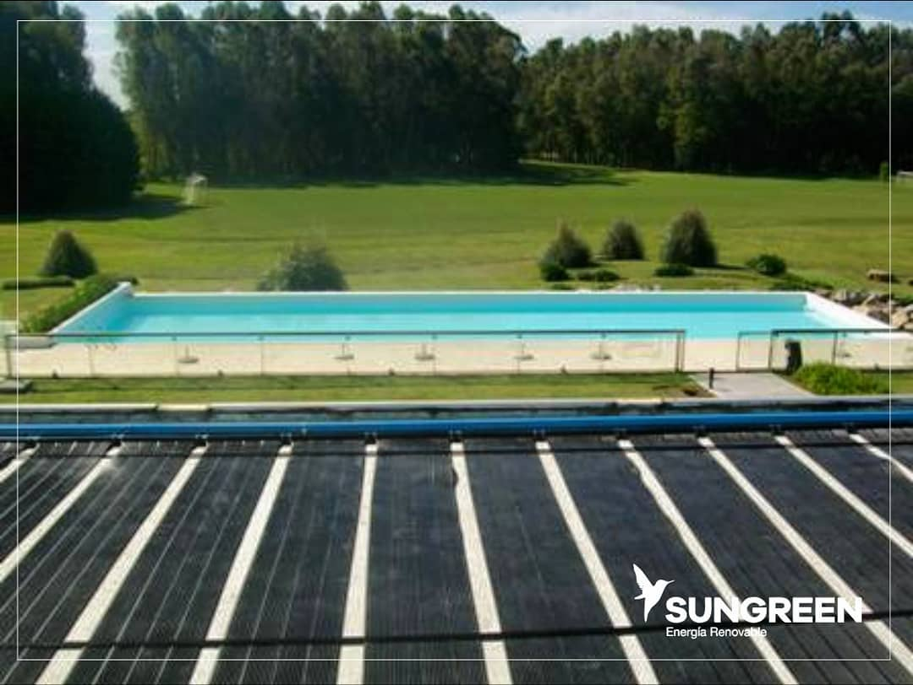

SISTEMAS FOTOVOLTAICOS OFF GRID
Como funciona?
Un sistema fotovoltaico Off Grid, tiene la posibilidad de generar energía eléctrica que será almacenada en el banco de baterías para su posterior uso.
Puede luego distribuirse en corriente alterna o en corriente continua, según el proyecto.

SISTEMAS FOTOVOLTAICOS ON GRID
Como funciona?
Un sistema fotovoltaico de inyección, es un equipo de generación de energía eléctrica a partir del sol,
que está conectado a la red eléctrica pública. No utiliza baterías. Usa la electricidad demandada en la vivienda y el resto se inyecta a la red
pública. La red toma como crédito el aporte realizado por tu instalación.
Luego, este excedente de energía, puede ser utilizado durante el transcurso de un año según la legislación de cada provincia.

SISTEMAS DE BOMBEO SOLAR
Como funciona?
Los sistemas de bombeo solar permiten recolectar agua de una fuente (río, cuenca, pozo, etc.) incluso si no hay una fuente de energía presente en el sitio.
A menudo utilizados para proporcionar agua potable
riego o para llenar depósitos, estos sistemas permiten el acceso al agua en las áreas más remotas.

TERMOTANQUES SOLARES
Como funciona?
El Termotanque Solar es un equipo pensado para generar agua caliente sanitaria usando la radiación del sol. Es un equipo autónomo
es decir que se instala, se llena con agua y ya comienza a funcionar, generando agua caliente.
Sus tubos de vidrio están llenos de agua y comunicados con el tanque acumulador. El sistema capta la radiación solar a través de los tubos y se la transfiere al agua en su interior, generándose una circulación natural del agua entre los tubos y el tanque acumulador,
llamada efecto termosifón. De esta manera se va calentando el agua acumulada.
Los tubos de vidrio tienen una cámara de vacío y distintas capas metálicas que logran una gran captación de los rayos solares y mínimas pérdidas de los mismos,
por su parte el tanque acumulador tiene una aislación térmica de poliuretano expandido, lo que garantiza que el agua acumulada no pierda temperatura durante largos períodos.

CLIMATIZACION SOLAR DE PISCINAS
Como funciona?
La calefacción solar para piscinas es el sistema de paneles más resistente disponible en Argentina.
La composición de polipropileno fusión de alta densidad con estabilización ante rayos UV garantiza que pueda resistir el paso del tiempo en condiciones difíciles, además de ser lo suficientemente robusto y flexible como para soportar vientos extremos, granizo y tormentas. El viento no afecta al sistema gracias a su diseño de tubos individuales de pequeño diámetro.
El diseño modular y encastrable de nuestro climatizador de piletas con sellos de o’ring estándar elimina la necesidad de accesorios extra para su instalación y permiten amoldarse perfectamente al techo por las reducidas dimensiones del módulo base de 0,3m x 3m.
riego o para llenar depósitos, estos sistemas permiten el acceso al agua en las áreas más remotas.
